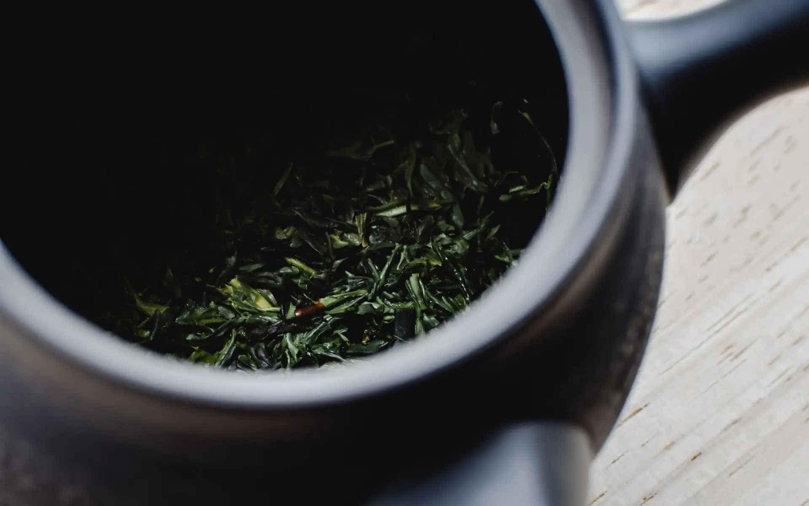
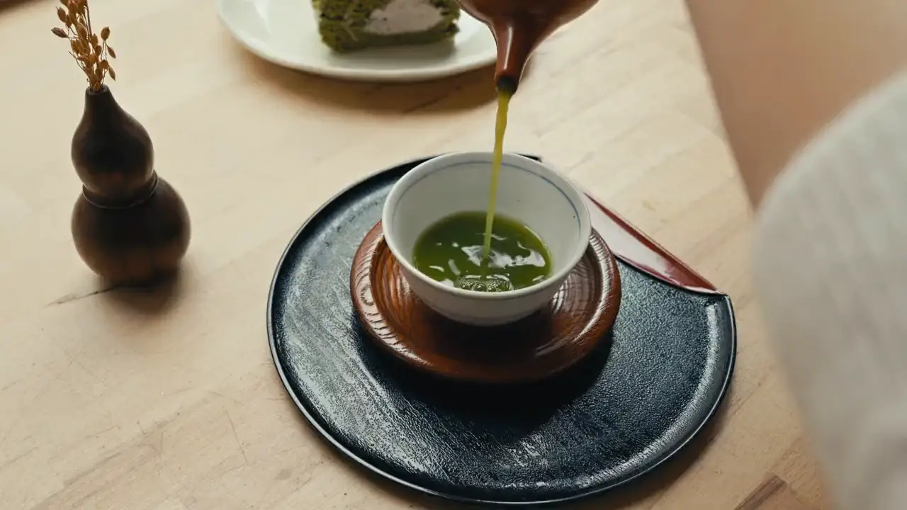
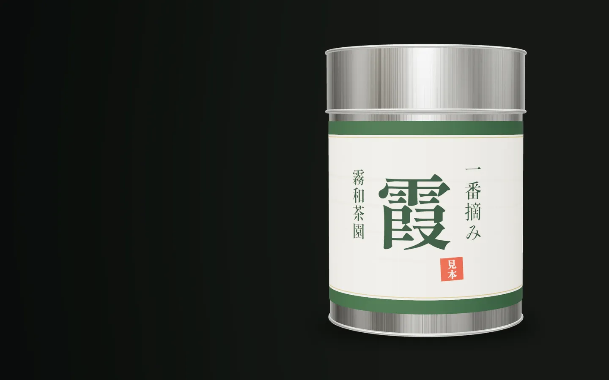

静岡の茶園から 一番茶の深蒸し煎茶
一番摘み霞かすみ
霧が晴れて、露が切れてから。
春の朝、台地をおおう霧が晴れ、葉の露が切れるのを待って摘みます。芽のそろった畑を選び、摘んだらすぐに深く蒸しました。
一
芽のそろうころに
枝の先の、まだ開ききらない芯と、その下の二枚の葉。芽の伸びがそろうこのころをねらって、やわらかい新芽を摘み取ります。
若い葉には、うま味のもとになる成分が多いといわれます。

二
蒸して、揉んで
摘んだらすぐに蒸して、葉の中の酵素の働きを止め、青くささを抜きます。牧之原の持ち味は、ふつうより長く蒸す深蒸し。渋みがおだやかで、こくのある味になります。
長く蒸した葉はやわらかく、揉むうちに細かくなって、粉も少し混じります。網の細かい急須がおすすめです。
三
湯は、少し冷ましてから
沸かした湯を人数分の湯呑みに注いで量を量り、もう一度移しかえて（または湯冷ましで）七十〜八十度ほどに。急須に茶葉を入れて湯を注ぎ、ふたをして待ちます。
- 茶葉
- 二人分で約6g（小さじ山盛り2杯）
- 湯
- 約140ml・70〜80℃
- 待つ
- 約40秒（深蒸しは短めに）

四
最後の一滴まで
湯呑みに少しずつ回し注ぎ、最後の一滴まで出しきります。とろりとした濃い緑の水色（すいしょく）。二煎目は熱めの湯で、待たずにすぐ注いで。
味の目安
- 甘み
- ●●●●○
- 渋み
- ●●○○○
- こく
- ●●●●○
- 水色
- 濃い緑・少しにごる

五
一番摘みの霞
開けたら、茶筒のふたをしっかり閉めて。湿気とにおい移りをふせぎ、ひと月ほどで飲みきるのがおすすめです。
- 種類
- 一番茶の深蒸し煎茶
- 内容量
- 80g・茶筒入り
- お値段
- 見本のため表示していません